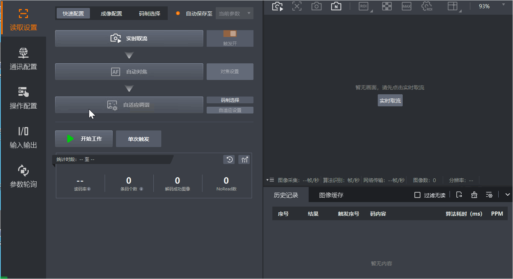

当读码器需要与PLC等外部设备或控制系统进行通信时，IDMVS支持通过配置通讯协议自定义读码器的数据传输方式，确保数据能够按照指定的协议和格式发送到目标设备或系统。
IDMVS的通讯配置功能支持多种协议，适用于不同的应用场景，请根据实际情况选择合适的通信协议并设置相关参数，配置通讯协议操作步骤如下。

在IDMVS主界面的功能导航栏单击通讯配置，进入通讯配置页面。
在通讯协议选择区域勾选需要开启的通讯协议，勾选后协议配置区域显示对应协议页签。
在协议配置区域单击协议名称，设置对应通讯协议的相关参数。
支持的通讯协议及参数说明详情请参见下文。
不同类型及固件版本读码器通信协议配置参数有所差别，具体请以实际参数为准。
通过软件开发工具包（SDK）与读码器进行数据交互时，需启用客户端SDK协议并配置参数。
可配置参数说明如下：
使用读码器串口进行数据传输时，需启用串口协议并配置参数。串口通信常用于短距离、低速和抗电磁干扰场景，如连接老式PLC、传感器等设备。
可配置参数说明如下：
选择读码器的串口波特率，代表串口每秒传输的位数（bit/s）。
请确保读码器和目标设备的串口波特率一致，以避免数据丢失或错误。
选择数据传输过程中每个字符的位数。可选择7或8，通常设置为 8 位。
仅串口数据位选择为8时，支持16进制触发方式。
设置用于检测传输错误的位，可选择如下三种方式：
不校验：不使用校验位。
奇校验：在数据的最后添加一个校验位，使得数据中1的个数为奇数。接收方收到数据后，检查数据中1的个数是否为奇数，如果不符，则认为数据传输有误。
偶校验：在数据的最后添加一个校验位，使得数据中1的个数为偶数。接收方收到数据后，检查数据中1的个数是否为偶数，如果不符，则认为数据传输有误。
设置在字符传输后用于标识字符结束的位数，可选择1或2。
当需要读码器作为客户端主动连接外部设备进行数据传输时，需启用TCP 客户端协议并配置参数。TCP 客户端协议常用于需要可靠数据传输的场景。
可配置参数说明如下：
当需要将读码器生成的文件（如图片、读码结果文件）传输到服务器时，可启用FTP协议并配置参数。FTP协议常用于文件传输场景。
可配置参数说明如下：
输入接收数据的FTP服务器IP地址。
设置接收数据的FTP服务器端口号。
输入用于登录FTP服务器的用户名。
输入用于登录FTP服务器的用户密码。
读码器未读到码时存储到FTP服务器的图片格式。可选JPGE和BMP两种格式。
FTP传输条件选择所有或没有读取条码，且传输内容含有条码图片时可配置此参数。
用于选择读码结果对应图像的来源。可选最新帧和特定帧。
在界面开启触发情况下可配置此参数。
选择存储到FTP服务器的文件名称编码格式。可选UTF8和GB2312。
如果传输失败，选择是否自动尝试重新传输。
选择触发FTP传输文件的条件，可选如下条件。
所有：无论读码结果如何，都进行传输。
读取条码：成功读取到条码时，进行FTP传输。
没有读取条码：未读取到条码时，进行FTP传输。
设置FTP传输文件时所包含的具体内容，可选择如下内容。
仅包含结果：仅传输条码的读取结果，以文件形式传输。
仅包含图片：仅传输条码的图像。
结果和图片：同时传输条码读取结果和图像文件。
选择传输文件的类型，可选csv文件、xls文件、txt文件。
传输内容选择仅包含结果或结果和图片时可配置此参数。
可对条码结果进行格式化配置。在界面可自主勾选内容，勾选的内容将在此参数内容框中显示。具体操作可见格式化配置。
传输内容选择仅包含结果或结果和图片时可配置此参数。
可自定义未读取到条码时输出的内容。默认为“None”。
传输内容选择仅包含结果或结果和图片时可配置此参数。
在未读取到条码进行FTP传输（NoReadBarcode）时，设置传输哪些图像，可选择如下策略。
传输条件选择所有或没有读取条码，且传出内容选择仅包含图片或结果和图片时可配置此参数。
最新帧：传输当前最新的图像帧。
全部帧：传输采集到的所有图像帧。
指定范围帧：传输指定范围内的图像帧，选择此策略需指定图像帧范围。
特定帧：传输指定的图像帧，选择此策略需通过帧索引参数指定图像帧序号。
可通过输入数字精准选择需要处理或输出的特定帧画面。
FTP传输条件选择
所有或没有读取条码时可配置此参数。选择是否根据读码结果（OK或NG）将文件分别存储到不同的目录中。
选择FTP传输时文件所附带的时间戳的格式。
自定义FTP传输时的文件路径。
可通过格式化配置功能定义，详情请参见格式化配置。
自定义FTP传输时的图片名称。
可通过格式化配置功能定义，详情请参见格式化配置。
开启后，IDMVS会保存读码器检测到但未成功解码的图像。
在界面开启触发时可配置此参数。
当需要读码器作为服务器，响应客户端的请求进行数据传输时，需启用TCP 服务端协议并配置参数。
可配置参数说明如下：
Profinet是一种用于工业自动化的以太网通信协议，支持高速、实时的数据传输。当需要与支持Profinet协议的PLC或其他工业设备进行通信时，可以启用Profinet协议并配置参数。
PLC配置中的设备IP地址必须和IDMVS中读码器的IP地址不相同，否则会导致通信异常。
可配置参数说明如下：
Melsec/SLMP协议是三菱电机开发的一种用于PLC通信的协议，支持高速数据传输和设备控制。当需要与三菱PLC进行通信时，可以启用Melsec/SLMP协议并配置参数。
可配置参数说明如下：
设置读码器连接PLC的IP地址。
设置读码器连接PLC的端口。
设置读码器在Melsec/SLMP协议中使用的通信帧格式。
设置读码器在Melsec/SLMP网络中的网络标识。
设置目标PLC的唯一标识符，以确保读码器能够正确地寻址和通信。
设置读码器在Melsec/SLMP协议中用于数据交换的输入/输出寄存器的起始编号。
设置读码器与PLC等外部设备之间数据同步的频率。
设置读码器在对应通讯协议网络中的控制数据寄存器地址偏移，即定义在网络中的控制数据起始位置，以确保能够正确地与外部设备进行通信。
设置读码器在对应通讯协议网络中的状态数据寄存器地址偏移，即定义在网络中的状态数据起始位置，确保状态数据能够被正确地读取和写入。
设置读码器在对应通讯协议网络中的结果数据寄存器地址偏移，即定义在网络中的结果数据起始位置，确保读码结果或其他输出数据能够被正确地读取。
设置读码器在对应通讯协议网络中用于结果数据的寄存器数量，以word为单位。此参数决定可以输出的结果数据的容量。
选择数据传输时是否交互字节传输顺序。开启后，字节按大端模式（Big Endian）传输，即高位字节先传输，低位字节后传输；小端模式（Little Endian）则相反。
设置读码器在发送请求后等待响应的时间。如果在此时间内未收到响应，读码器将认为通信超时。
EthernetIP协议是一种用于工业自动化的以太网通信协议，支持高速、实时的数据传输和设备控制。当需要与支持EthernetIP协议的PLC或其他工业设备进行通信，可以启用EthernetIP协议并配置参数。
可配置参数说明如下：
ModBus协议是一种常用的工业通信协议。当需要与支持ModBus协议的PLC或其他工业设备进行通信，可以启用ModBus协议并配置参数。
可配置参数说明如下：
设置读码器在ModBus协议下的模式，可选择服务端或客户端。
服务端：响应外部设备的请求。
客户端：主动发起连接请求，向服务端发送读取或写入的请求，并处理接收到的响应数据。选择客户端模式后，可配置如下参数。
输入ModBus服务器（即PLC或其他设备）的IP地址。
设置ModBus服务器端口号。
设置读码器与服务器之间数据同步的频率。
设置读码器在ModBus网络中的标识号。在ModBus通信中，每个客户端都有一个唯一的标识号，用于区分不同的设备。
设置读码器在对应通讯协议网络中的控制数据寄存器地址偏移，即定义在网络中的控制数据起始位置，以确保能够正确地与外部设备进行通信。
设置读码器在对应通讯协议网络中的状态数据寄存器地址偏移，即定义在网络中的状态数据起始位置，确保状态数据能够被正确地读取和写入。
设置读码器在对应通讯协议网络中的结果数据寄存器地址偏移，即定义在网络中的结果数据起始位置，确保读码结果或其他输出数据能够被正确地读取。
设置读码器在对应通讯协议网络中用于结果数据的寄存器数量，以word为单位。此参数决定可以输出的结果数据的容量。
选择数据传输时是否交互字节传输顺序。开启后，字节按大端模式（Big Endian）传输，即高位字节先传输，低位字节后传输；小端模式（Little Endian）则相反。
设置读码器在发送请求后等待响应的时间。如果在此时间内未收到响应，读码器将认为通信超时。
UDP协议是一种无连接的网络传输协议，当需要快速传输数据且对数据丢失不敏感时，可以启用UDP协议并配置参数。
可配置参数说明如下：
Fins协议是富士电机开发的一种用于PLC通信的协议，支持高速数据传输和设备控制。当需要与富士PLC进行通信时，可以启用Fins协议并配置参数。
可配置参数说明如下：
选择使用Fins通讯协议时的通信方式，可选如下方式。
UDP：UDP通信方式具有较快的传输速度，但数据通信的可靠性没有TCP协议高。适用于对实时性要求较高，可以容忍一些数据丢失的场景。
TCP：TCP通信方式的可靠性比UDP高，适用于对数据完整性和传输顺序有要求的场景。
输入读码器连接目标服务器（即PLC或其他设备）的IP地址。
设置读码器连接目标服务器的端口号。
设置读码器与服务器之间数据同步的频率。
设置读码器在对应通讯协议网络中的控制数据寄存器地址偏移，即定义在网络中的控制数据起始位置，以确保能够正确地与外部设备进行通信。
设置读码器在对应通讯协议网络中的状态数据寄存器地址偏移，即定义在网络中的状态数据起始位置，确保状态数据能够被正确地读取和写入。
设置读码器在对应通讯协议网络中的结果数据寄存器地址偏移，即定义在网络中的结果数据起始位置，确保读码结果或其他输出数据能够被正确地读取。
设置读码器在对应通讯协议网络中用于结果数据的寄存器数量，以word为单位。此参数决定可以输出的结果数据的容量。
选择数据传输时是否交互字节传输顺序。开启后，字节按大端模式（Big Endian）传输，即高位字节先传输，低位字节后传输；小端模式（Little Endian）则相反。
设置读码器在发送请求后等待响应的时间。如果在此时间内未收到响应，读码器将认为通信超时。